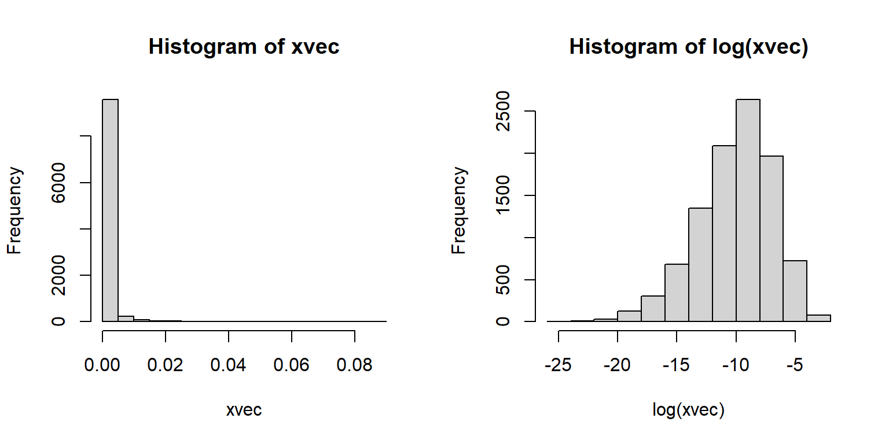
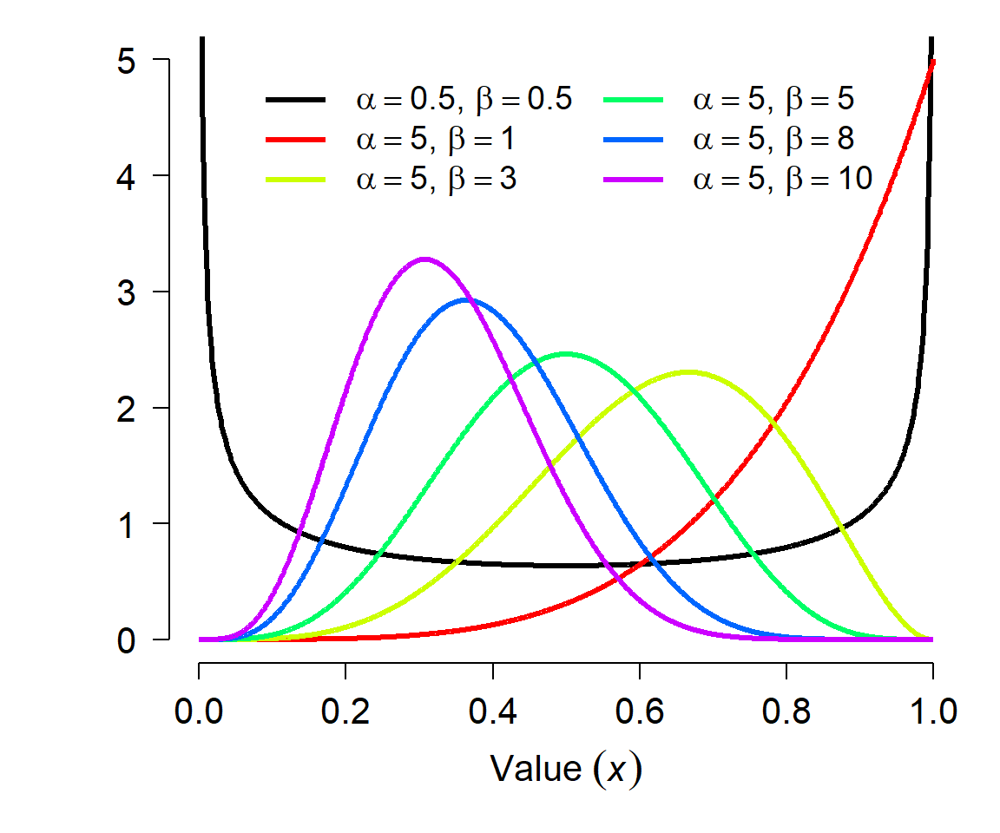
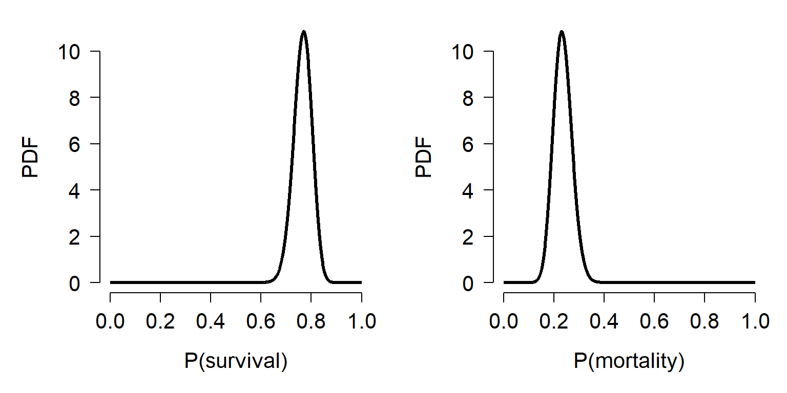
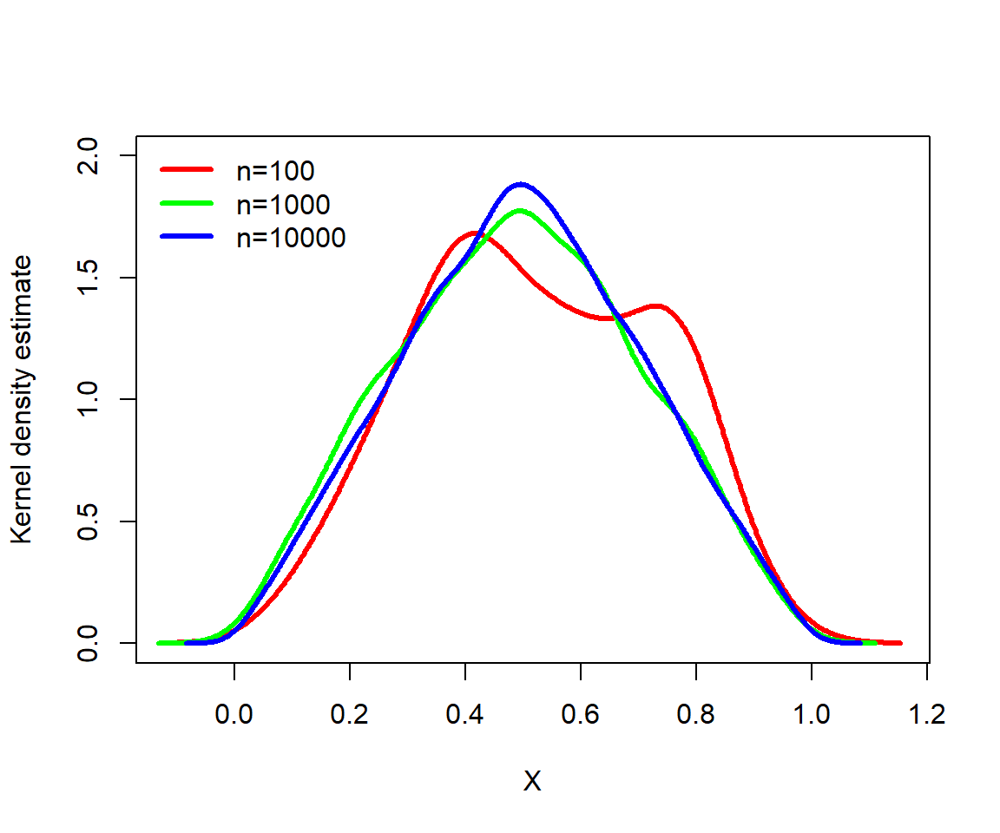
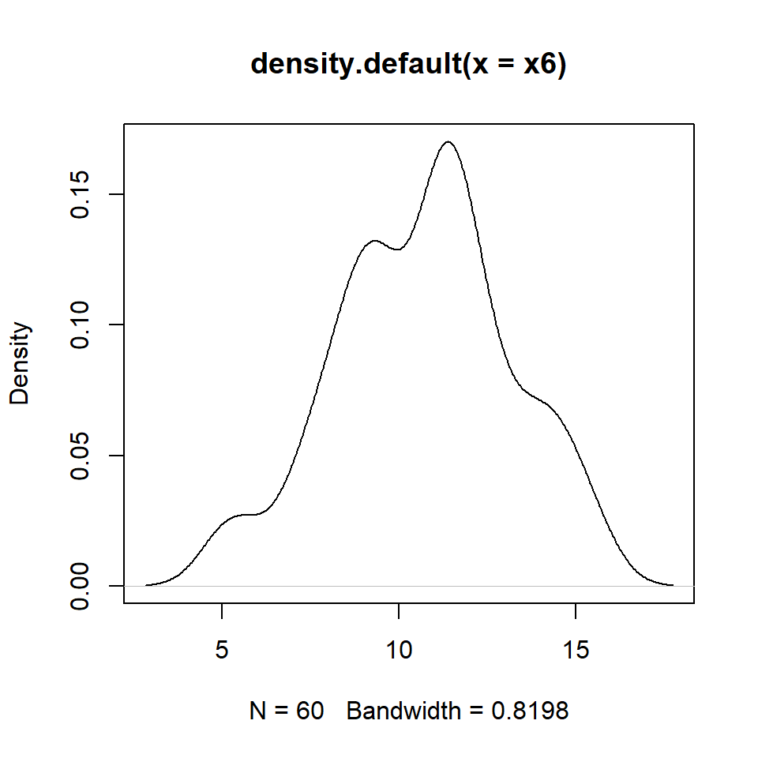
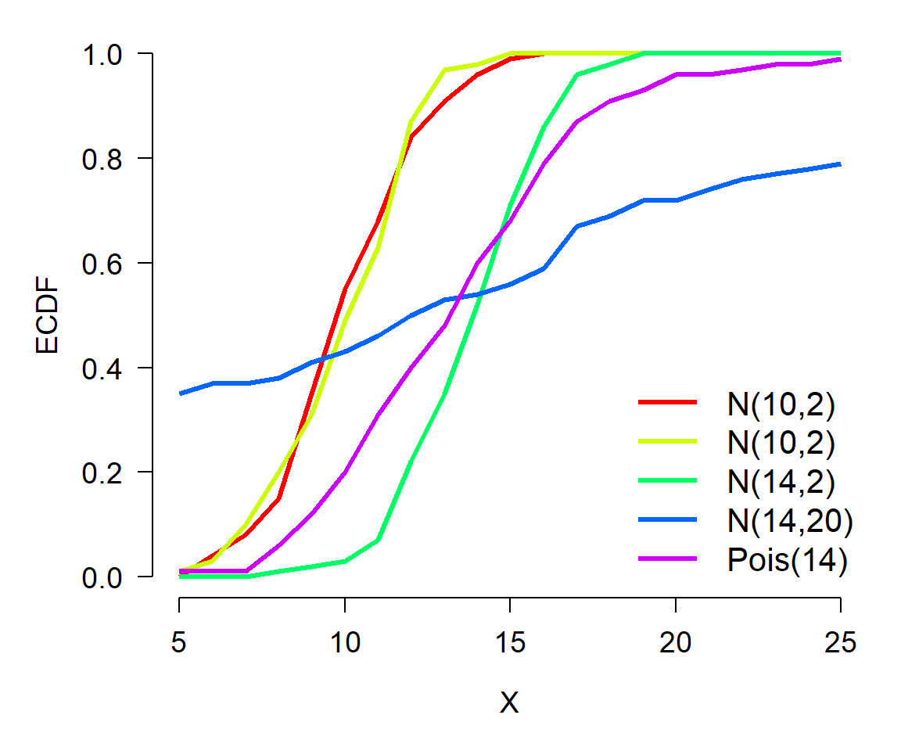
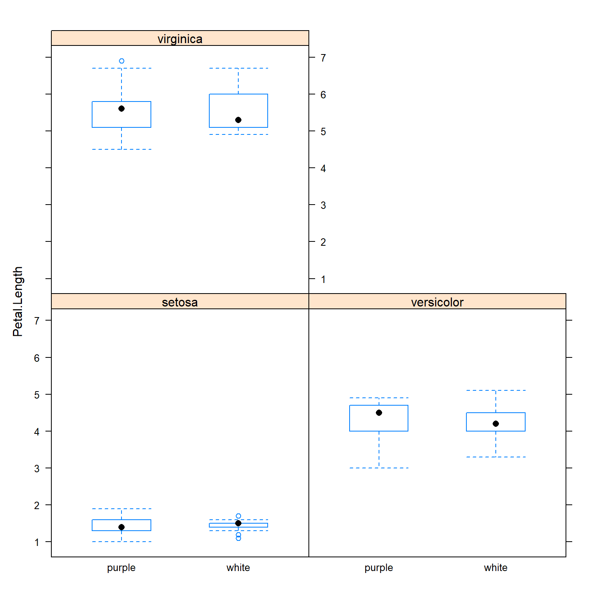
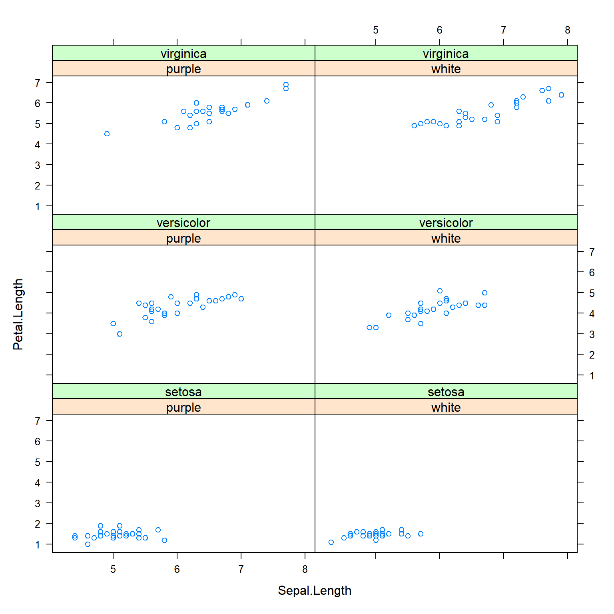
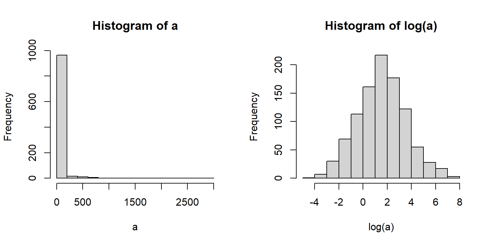
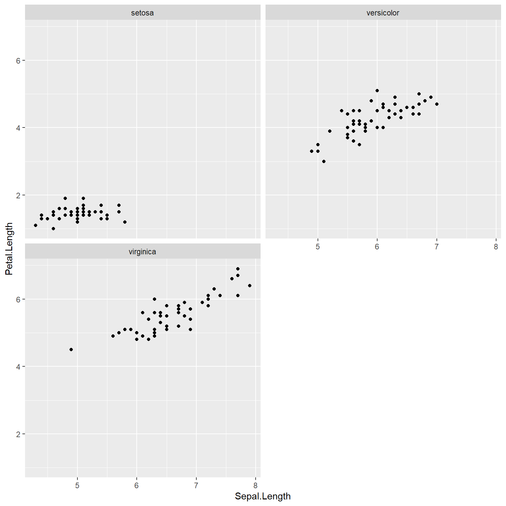

4.6 Multivariate data exploration
So far in this course we have explored ways to explore distributions of single variables: histograms, ECDF plots, probability density plots, and so on. On this page we will explore ways to explore relationships between variables. This is a vital preliminary step in studying how two or more variables might be correlated with each other, or how one might cause the other. The focus on this page is on exploratory, correlative methods. Actual inference about relationships between two variables is better handled by linear models (LM), generalized linear models (GLM), or other kinds of models. This page also contain a brief introduction to ordination, which can help identify patterns in datasets with many variables. A more complete presentation of ordination can be found on another page.
4.6.1 Scatterplots for two variables
The scatterplot is one of the most important tools in the biologist’s data toolbox. It is probably the simplest type of figure in routine use: simply plot the values in one variable on one axis, and the values of another variable on another (perpendicular) axis. The role of the scatterplot in exploratory data analysis is to help visualize the form of the relationship between two variables (Bolker 2008). The figure below shows just 6 of the possible curve types that you might discover.

We have already made some scatterplots, but it’s worth taking a closer look at the R methods for scatterplots. The basic function for scatterplots is plot(). The first argument is taken to be the x coordinates, and the second argument to be the y coordinates. You can also use the formula interface (y ~ x), but the coordinates method (x, y) usually makes for cleaner code.
Calling plot() does two things: first, it creates a new plot; second, it plots the data on the new plot area. Other components can be added to the plot with subsequent commands: points() for points, text() for text, lines() for lines, polygon() for polygons, segments() for line segments, and so on. These functions will add to an existing plot, but will not create a new plot area. So, call plot() first, then points() or one of the others if needed. Calling points() or one of the “adding” functions if there is not already an active plot area will return an error.
Here is a basic scatterplot:
plot(iris$Petal.Width,iris$Petal.Length)
The default scatterplot is rather unattractive, but works just fine for exploring data. Fortunately, almost every aspect of a plot can be customized using different plot arguments and graphical parameters. Here are some commonly used plot options:
plot(iris$Petal.Width,iris$Petal.Length,
xlab="Petal width (cm)", # x label
ylab="Petal Length (cm)", # y label
xlim=c(0,3), # x axis limits
ylim=c(0,8), # y axis limits
main="Petal length vs. petal width" # plot title
)#plot 
Sometimes it helps to change the color or style of points to show categories in the data. This can be done using some arguments to plot():
pchchanges the symbol used for points. Think “point character”. See?pointsfor a list of available symbols.cexchanges the size of symbols. Think “character expansion”. The defaultcexis 1; other values scale the points relative to this. E.g.,cex=2makes points twice as large.colchanges the color. Think “color”.R can produce many colors; run the commandcolors()to see a named list44.
Each these arguments can take vector of values, so you can assign colors or shape to each point. The values will be used in the same order as the observations used to draw the points (e.g., rows of a data frame). I find it convenient to use rules like ifelse() commands to define symbology for plots.
The examples below illustrate several ways of assigning symbology to observations within a data frame. In the first, ifelse() is used to make vectors of colors (use.col) defined by the variable species. Notice that a legend is provided to tell the reader which symbols mean what.
# method 1: ifelse()
use.col <- ifelse(iris$Species == "setosa", "black",
ifelse(iris$Species == "versicolor", "red", "blue"))
plot(iris$Petal.Width,iris$Petal.Length,
col=use.col, # color by species
pch=16 # solid dots
)
legend("bottomright",
legend=c("Setosa", "Versicolor", "Virginica"),
pch=16, col=c("black", "red", "blue"))
The next example uses match() instead of ifelse() to assign colors by species.
# method 2: match()
spps <- sort(unique(iris$Species))
cols <- c("blue", "yellow", "purple")
use.col <- cols[match(iris$Species, spps)]
plot(iris$Petal.Width,iris$Petal.Length,
col=use.col, # color by species
pch=16 # solid dots
)
legend("bottomright",
legend=c("Setosa", "Versicolor", "Virginica"),
pch=16, col=cols)
Here is an example of using shapes (use.pch) to define groups:
# method 3: match(), but with shape
spps <- sort(unique(iris$Species))
shps <- c(15, 16, 17)
use.shp <- shps[match(iris$Species, spps)]
plot(iris$Petal.Width,iris$Petal.Length,
pch=use.shp # shape by species
)
legend("bottomright",
legend=c("Setosa", "Versicolor", "Virginica"),
pch=shps)
You can think of the plot generated by plot() like a canvas. Once the canvas is in place, things can be “painted” on, but like paint cannot be removed. If you want to remove something, you’ll need to remake the plot without it. You can also just comment out the command you don’t want.
plot(iris$Petal.Width,iris$Petal.Length,
col=use.col, pch=16
)
text(1.5, 5, "Flowers!", cex=4, col="red")
legend("bottomright", legend=spps, col=cols, pch=16)
There’s no way to remove the offending text: R doesn’t have an “Undo” button! Our only option is just to remake the plot without the text.
# remake without the offending text:
plot(iris$Petal.Width,iris$Petal.Length,
col=use.col, pch=16
)
legend("bottomright", legend=spps, col=cols, pch=16)
Sometimes I’ll just comment out the plot component that needs deleting; this way it is easier to add back in later.
# not run:
# remake without the offending text (commented out):
plot(iris$Petal.Width,iris$Petal.Length,
col=use.col, pch=16
)
#text(1.5, 5, "Flowers!", cex=4, col="red")
legend("bottomright", legend=spps, col=cols, pch=16)4.6.1.1 Graphical parameters and the par() command
Many options that affect plots can only be set using the par() function. Take a look at the par() help page to get a sense of the variety of options available (?par). It is important to keep in mind is that once par() options are set, they will stay that way until you change them using par() again. So, if you are making multiple figures within the same R workspace you will need to pay attention to what you have done. You can always see all current settings by running the command par().
Below is an illustration of using par() to change graphics options:
Without par():
plot(iris$Petal.Length~iris$Sepal.Length,
xlab="Sepal length (cm)",
ylab="Petal length (cm)",
xlim=c(0,8),ylim=c(0,8))
With par():
- Narrow the margins (
mar) - Remove the box (
bty) - Turn y-axis numbers to horizontal (
las) - Bring axis labels in closer (
mgp) - Set size of axis text (
cex.axis) and labels (cex.lab)
par(mar=c(4.1, 4.1, 1.1, 1.1), # margin sizes
bty="n", # no box around plot
las=1, # axis labels in reading direction
mgp=c(2.25, 1,0), # position of axis components
cex.axis=1.2, # size of axis numbers
cex.lab=1.2) # size of axis titles
plot(iris$Petal.Length~iris$Sepal.Length,
xlab="Sepal length (cm)",
ylab="Petal length (cm)",
xlim=c(0,8),ylim=c(0,8))
We will use par() often in this course to clean up figures and make them more attractive. Most of the time you won’t need to mess with par() (except for making multi-panel figures), but you should definitely use par() when preparing figures for publication. Proper use of par() is the key to making clean, informative, and professional-looking figures.
4.6.1.2 Multi-panel figures with par()
One of the most common ways to use par() is to make multi-panel figures. The panels are specified in terms of the number of rows and columns in the figure. The arguments mfrow and mfcol define the panel layout.
mfrow: you supply the number of rows and number of columns, in that order.mfcol: works the same way, but in reverse: supply the number of columns and number of rows, in that order.
Once you set mfrow or mfcol (but never both), a new plot panel will be produced each time you call plot(). The graphics window will be divided evenly according to the number of panels you requested (e.g., mfrow=c(2,3) will yield 6 panels). Panels are drawn by row and then by column (with mfrow) or by column and then by row (with mfcol).
If you produce more plots than you have “slots” specified by mfrow or mfcol, the graphics device will be cleared and the plot panels will be filled again, in the same order as before. So, if you set mfrow=c(2,2), and then make 5 plots, you will end up with a graphics window that has 1 plot in the upper left corner.
The example below shows the use of par()$mfrow to make a 2 \(\times\) 2 figure.
par(mfrow=c(2,2), # layout
mar=c(4.1,4.1,1.1,1.1), # margin sizes
bty="n", # no box around plot
las=1, # rotate axis text
cex.axis=1.2, # axis text size
cex.lab=1.2) # label text size
hist(iris$Petal.Length, main="Plot 1")
hist(iris$Petal.Width, main="Plot 2")
hist(iris$Sepal.Length, main="Plot 3")
hist(iris$Sepal.Width, main="Plot 4")
When making multi-panel plots, it helps to line up axes that correspond to each other. The commands below show two separate figures with aligned axes. This can be helpful when showing different responses to the same explanatory variable (the 2 \(\times\) 1 figure):
par(mfrow=c(2,1), # layout
mar=c(4.1,4.1,1.1,1.1), # margin sizes
bty="n", # no box around plot
las=1, # rotate axis text
cex.axis=1.2, # axis text size
cex.lab=1.2) # label text size
plot(iris$Petal.Length, iris$Sepal.Length)
plot(iris$Petal.Length, iris$Sepal.Width)
The figure below is a 1 \(\times\) 2 figure that shows how a single response variable relates to two different predictors.
par(mfrow=c(1,2), # layout
mar=c(4.1,4.1,1.1,1.1), # margin sizes
bty="n", # no box around plot
las=1, # rotate axis text
cex.axis=1.2, # axis text size
cex.lab=1.2) # label text size
plot(iris$Petal.Width, iris$Petal.Length)
boxplot(iris$Petal.Length~iris$Species)
Sometimes you may need to manually set axis limits to make sure that the panels line up exactly.
# example with X and Y axes not aligned:
d1 <- iris[which(iris$Species == "setosa"),]
d2 <- iris[which(iris$Species == "versicolor"),]
par(mfrow=c(2,1))
plot(d1$Petal.Length, d1$Sepal.Length)
plot(d2$Petal.Length, d2$Sepal.Length)
Here’s the same plot, but with the axes lined up by setting the axis limits with xlim and ylim.
# same plot but with axes lined up:
par(mfrow=c(2,1))
plot(d1$Petal.Length, d1$Sepal.Length, xlim=c(0,6), ylim=c(0,8))
plot(d2$Petal.Length, d2$Sepal.Length, xlim=c(0,6), ylim=c(0,8))
The argument mfcol to par() works similarly to mfrow, but on columns instead of rows. For mfcol you supply the number of columns, then the number of rows. Likewise, panels are filled by column first instead of row first. The panel layout mfrow=c(2,3) is the same as mfcol=c(3,2), but the panels will be filled in a different order:

Whether to use mfrow or mfcol is usually a matter of preference. Clever use of one or the other can allow you to automatically make multi-panel plots in a preferred layout from data stored in a list or indexed by a vector.
One last thing about multi-panel plots: the plot() function both creates new panels and the plot within each panel. Part of this process is defining the coordinate system for a panel. When you make a plot, subsequent commands that add elements to plots such as points(), abline(), legend(), etc., will use the coordinate system of the most recent panel. Think about this when designing complicated figures. The example below demonstrates how a legend is placed according to the coordinate system of the most recently-created plot.
n <- 1e3
# legend in first panel:
par(mfrow=c(1,3))
hist(rnorm(n))
legend("topleft", legend="Data", fill="lightgrey")
hist(rnorm(n))
hist(rnorm(n))
# legend in second panel (note where legend() is):
par(mfrow=c(1,3))
hist(rnorm(n))
hist(rnorm(n))
legend("topright", legend="Data", fill="lightgrey")
hist(rnorm(n))
4.6.2 Scatterplot matrices for many variables
A scatterplot plots one variable against another, and is probably the best way to see the relationship (if any) between two variables. But what if you have many variables? Making dozens of scatterplots can be tedious and time consuming. A scatterplot matrix makes many scatterplots at once, allowing relationships between many variables to be visualized at once. The base function to do this is pairs().
# load some data
data(crabs, package="MASS")
# make a spare copy
x <- crabs
# define columns for scatterplot matrix
dat.cols <- 4:8
# make scatterplot matrix
pairs(x[,dat.cols])
In the scatterplot matrix, every variable is plotted against every other variable. Variables are labeled on the diagonal. E.g., the plots in the first row have “FL” as their y-axis, and “RW”, “CL”, “CW”, and “BD” as their x-axes. Likewise, plots in the first column have “FL” as their x-axis, and “RW”, “CL”, “CW”, and “BD” as their y-axes.
One common modification to the default pairs() plot is to replace scatterplots above the diagonal with correlation coefficients. Another modification is to add linear regression or LOESS45 lines to the lower plots to help highlight the relationships. The function below is adapted from the help page for pairs(). Notice that the size of the text for each coefficient is scaled to the magnitude of the coefficient. Can you figure out what piece of the code is doing that?
# define a function to add correlation coefficients
panel.cor <- function(x, y, digits = 2, prefix = "", cex.cor, ...)
{
usr <- par("usr"); on.exit(par(usr))
par(usr = c(0, 1, 0, 1))
r <- cor(x, y)
txt <- format(c(r, 0.123456789), digits = digits)[1]
txt <- paste0(prefix, txt)
if(missing(cex.cor)) cex.cor <- 0.8/strwidth(txt)
text(0.5, 0.5, txt, cex = 2*abs(r))
}
# example of use:
pairs(x[,c(2, dat.cols)],
lower.panel=panel.smooth,
upper.panel=panel.cor, gap=0)
Sometimes the Spearman rank correlation coefficient \(\rho\) is more informative than the Pearson linear correlation coefficient r. The function panel.cor() can be modified to use \(\rho\) instead of r:
panel.cor2 <- function(x, y, digits = 2, prefix = "", cex.cor, ...)
{
usr <- par("usr"); on.exit(par(usr))
par(usr = c(0, 1, 0, 1))
r <- cor.test(x, y, method="spearman")$estimate
txt <- format(c(r, 0.123456789), digits = digits)[1]
txt <- paste0(prefix, txt)
if(missing(cex.cor)) cex.cor <- 0.8/strwidth(txt)
text(0.5, 0.5, txt, cex = 2*abs(r))
}
# example of use:
# (might return warnings but these are ok)
pairs(x[,dat.cols],
lower.panel=panel.smooth,
upper.panel=panel.cor2, gap=0)
4.6.3 Lattice plots for hierarchical data
In another module we will explore mixed models, also known as hierarchical models, which can account for relationships that differ between groups of data. These are similar in some ways to analysis of covariance (ANCOVA) models with interactions. An example of what ANCOVA can look like is shown below:

In the left panel, the Y variable increases as a function of the X variable. There is also an effect of the group variable (i.e., a factor): Y values in group 2 are on average greater than values in group 1. This is called “main effects” ANCOVA. In the right panel, Y increases with X, and the slope of Y with respect to X varies between groups. In other words, X has a greater effect on Y in group 2 than in group 1. This is called an “interaction” between X and the grouping variable. Analyses that include such interactions are sometimes called “interaction effects” ANCOVA because the effects of one variable “interact with” the effects of another variable. Both types of ANCOVA are extremely common in biology.
One key difference between an ANCOVA model and a mixed model is that while in ANCOVA the slope and intercept are fitted specifically to each level of the grouping variable, consuming degrees of freedom, in a mixed model these slopes and intercepts are considered to be drawn from a random distribution. For now, all you need to understand is that the relationship between response and predictor variables can differ between groups. A lattice or trellis plot is a way to visualize such differences. In R these are named for package lattice which is an older package for producing hierarchical plots. The newer tidyverse packages can also do the job (and are becoming much more popular than lattice, from what I can tell).
library(lattice)
# scatterplot of 2 continuous variables
# by species
xyplot(Petal.Length ~ Sepal.Length | Species, data=iris)
Lattice plots can group observations by more than one variable, as shown below.
# add another (pretend) variable
x <- iris
x$color <- c("purple", "white")
xyplot(Petal.Length ~ Sepal.Length | Species+color, data=x)
# same plot, different layout:
xyplot(Petal.Length ~ Sepal.Length | color+Species, data=x)
lattice can also produce hierarchical boxplots. This is the graphical equivalent of aggregating by more than one variable.
# box-and-whisker plots by color within species
bwplot(Petal.Length~color|Species, data=x)
The tidyverse equivalent to the first lattice plot above is:
library(ggplot2)
ggplot(data=x) +
geom_point(mapping=aes(x=Sepal.Length, y=Petal.Length)) +
facet_wrap(~Species, nrow=1)
# same plot, different layout:
ggplot(data=x) +
geom_point(mapping=aes(x=Sepal.Length, y=Petal.Length)) +
facet_wrap(~Species, nrow=2)
# same plot, another layout:
ggplot(data=x) +
geom_boxplot(aes(y=Petal.Length, x=color)) +
facet_wrap(~Species,nrow=2)
Whether you use lattice or ggplot2 to make your hierarchical graphs is largely a matter of personal preference. Both packages work just fine for exploratory data analysis. Both share the advantage of being very fast, with the ability to represent a lot of data with very little “ink” and code. Both share the disadvantage of being tricky to customize because many of the graphical options are “hidden” inside layers of other functions.
If you need to present a hierarchical plot in a presentation or manuscript, and need to meet very specific formatting requirements, you may need to make your figure using base graphics. The commands below reproduce the figures above in base graphics. Note that while using base graphics requires more coding to get the same result, it is much easier to customize the plots because the plotting options are not buried inside other functions.
flag1 <- which(x$Species == "setosa")
flag2 <- which(x$Species == "versicolor")
flag3 <- which(x$Species == "virginica")
par(mfrow=c(2,2), mar=c(5.1, 5.1, 1.1, 1.1),
las=1, lend=1, bty="n",
cex.lab=1.3, cex.axis=1.3)
plot(x$Sepal.Length[flag1], x$Petal.Length[flag1],
xlim=c(4, 8), ylim=c(0, 8),
xlab="Sepal length", ylab="Petal length")
title(main=expression(italic(Iris)~italic(setosa)))
plot(x$Sepal.Length[flag2], x$Petal.Length[flag2],
xlim=c(4, 8), ylim=c(0, 8),
xlab="Sepal length", ylab="Petal length")
title(main=expression(italic(Iris)~italic(versicolor)))
plot(x$Sepal.Length[flag3], x$Petal.Length[flag3],
xlim=c(4, 8), ylim=c(0, 8),
xlab="Sepal length", ylab="Petal length")
title(main=expression(italic(Iris)~italic(virginica)))
Here is the hierarchical boxplot:
par(mfrow=c(2,2), mar=c(5.1, 5.1, 1.1, 1.1),
las=1, lend=1, bty="n",
cex.lab=1.3, cex.axis=1.3)
boxplot(Petal.Length~color, data=x[flag1,],
xlab="Color", ylab="Petal length",
ylim=c(0, 8))
title(main=expression(italic(Iris)~italic(setosa)))
boxplot(Petal.Length~color, data=x[flag2,],
xlab="Color", ylab="Petal length",
ylim=c(0, 8))
title(main=expression(italic(Iris)~italic(versicolor)))
boxplot(Petal.Length~color, data=x[flag3,],
xlab="Color", ylab="Petal length",
ylim=c(0, 8))
title(main=expression(italic(Iris)~italic(virginica)))